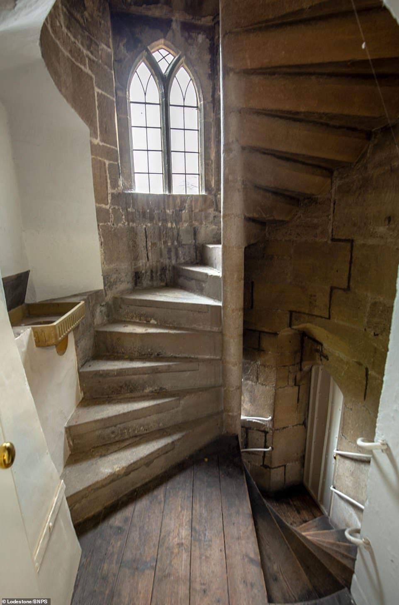
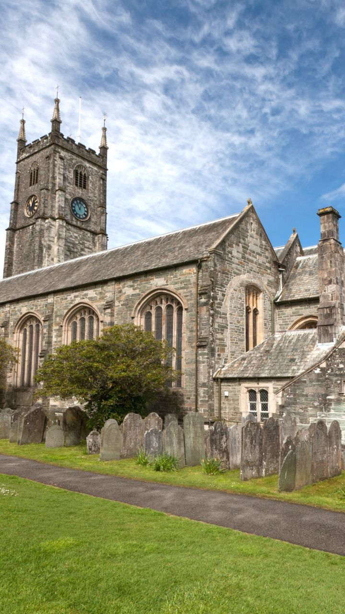

Visit the tower
72 steps to the ropes, about 85 dB while the bells are ringing, and earplugs at the door.
In the tower
- Stairs
- 72 steps on a spiral stair to the ringing chamber; 104 to the bell chamber, which visitors do not enter
- Noise
- About 85 dB in the ringing chamber, over 110 dB beside the bells
- Earplugs
- Free at the door; ear defenders for under-12s
- Age
- Watch from 8 with an adult. Ring from 12. Under 16s with a parent’s form
- Bags
- Leave at the foot of the tower; the stair is 68 cm wide
- Photos
- Allowed between touches. No flash while bells are up

When
- Tuesday
- Simulator hour 18:30 – 20:00
- Wednesday
- Tower practice 19:30 – 21:00
- Thursday
- Handling practice 19:00 – 20:30; course nights from 5 Nov
- Friday
- Method practice 19:30 – 21:00
- Saturday
- Open morning 10:00 – 12:00
- Sunday
- Service ringing 10:15 – 10:55, band only
- Monday
- Closed
Getting here
- Bus
- Route 47 from Ollerton station, hourly until 22:10; stop at the lychgate
- Car
- Six spaces on Church Lane, more at the village hall (3 minutes)
- Step-free
- Simulator room and toilet at the foot of the tower; the chamber is stairs only
The Tower Room, Church Lane, Harnscombe, Devon

Questions
Can I watch without ringing?
Yes. Saturday open mornings have a bench in the ringing chamber for six visitors. Book a place on the practice page so the tower captain knows how many to expect.
Is it safe to stand in the chamber?
Stand where the tower captain puts you, behind the bench line, and keep clear of the ropes when bells are up. A rope moves about 1.5 m at each stroke.
What happens if I feel unwell on the stairs?
Sit on the next landing; there are two, at step 24 and step 51. A ringer will come down. The stair has a rope handrail all the way up.
Do you ring for weddings?
Yes, on Saturdays by arrangement with the parish office. The band rings for about 20 minutes before and after the service.